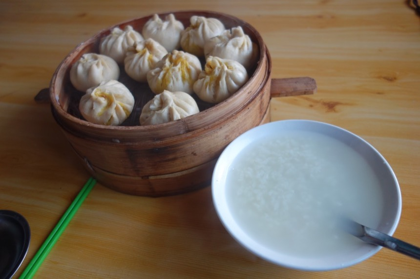

10/23 Day 3 湟源
電熱毯很舒服
但是半夜睡覺頭莫名痛了一陣子，難道室內溫度之冷，就連戴上瓜皮帽保暖也沒作用？
保溫壺的水尚溫熱（沒有電熱壺，但有提供令人懷念的熱水保溫壺）
起床後泡了熱咖啡喝，頭痛舒緩些，咖啡對於旅行還蠻重要的！在心靈和肉體上都很滋補，應該要找機會補充（只帶了6包左右）
昨天住的旅館的內院其實是一個小小的市集，七點整天就很亮了
但出發拖了點時間，收拾東西上，還有早起的時候會有點懶散，動作沒那麼利落。
樂都是個不小的城市，可惜我不太喜歡城市，所以在破曉時就要離開。
在要離開樂都的時候吃了小龍包 十顆 （7元）稀飯一碗（1.5元）
味道固然不錯令人高興，但物價和2007年相比真是飛漲呀，那時候的豆漿/稀飯類，通通是0.5元。
而且這邊還只是內陸的一個小城市而已，根本難以想像一線、二線的大城市，物價已經漲到什麼地步。

這時候吃包子還是一籠7元，總計10顆，等吃到終點的時候，已經變成1顆1元。稀飯很虛～很虛～
上路第二天，首度開始聽音樂騎車。
旁邊這個人行道，就是昨天摸黑騎車撞到而差點摔車的東西，之所以會摔車是因為人行道前面有凸起一個水泥障礙物。
到正午之前都蠻冷的（5度左右），隨著時間經過，氣溫會慢慢爬升，過了中午氣溫會到約20度。
太陽直曬感覺很熱，但躲在陰暗處休息，風一吹又會覺得很冷。
摘下帽子後，頭上及全身又都是汗水，千萬別因為這樣冷熱交替而感冒。

中午前就抵達今天的目的地“西寧”，之所以這麼快就到，是因為昨天已經預先騎了海石村->樂都這段路。
昨天才說“在不確定下一個住宿地點之前，不要貿然離開今天的目的地”，但時間真的太早太早，而且我知道今天可以騎到哪邊休息。
市容很漂亮，是的，那些都是假花，在歐洲的話當然（應該）都是放真花，但預算和養護以及清潔上的費用也很大。
花一小時騎出這大大大城市，怎麼說也是青海最大的城市。
附帶一提，西寧是很多人會選擇作為騎單車到拉薩的起點，也許是因為青藏鐵路的起點站是拉薩，終點站是西寧。
到其他地方的旅客（上海、廣東之類的）要在西寧月台換車。（是個痛苦的經驗，之後會談到）
但我個人真的很推薦直接從格爾木開始騎車就好，雖然一離開格爾木(海拔2800)，
第一天就會直接爬升到海拔4100以上（一定要先熱身），但格爾木之後的路況跟風景才是騎行青藏公路的人所盼望的。
在西寧的郊區吃半斤水餃（14）當午餐
口味看似很多，但這個也沒有，那個也沒有，再來，所謂的大肉究竟是什麼呢。豬肉嗎？
其實只是單位用“斤”來寫而已，實際客人跟店員溝通都會明講1斤=60顆，半斤=30顆。
我想說30顆也很夠吃了，但送上來是三十顆“小”水餃（真的很小，像台灣的一元水餃那樣），味道也...差強人意
恐怖的物價呀。我在台灣吃飯也不用這麼貴呀 =..=
沒有酸辣湯那些可以搭配，但是有免費的麵湯（煮水餃的熱水）可以喝，看似平淡無奇，其實味道跟水餃還挺搭的。
邊吃邊盤算，一天預算抓50，住宿含三餐（或兩餐，早餐吃餅乾），看來會生活的超級吃緊。
看前輩的遊記說離開西寧會有31公里的緩爬坡，但騎了好久都還沒看到爬坡。
打開海拔計一看才發現原來“已經”在爬坡了，歸功於小喵號是公路車，騎乘非常輕快。
加上行李也不多，要是騎小多+20公斤行李，只怕我騎的都要哭了。
路上看到水果攤，買了5元的小橘子，共計9顆。
非常甜，好剝皮，無子，方便食用。還可以補充維他命C，旅行的時候我挺喜歡吃橘子。
我稱它為”小”橘子，因為它如照片一般，看起來小小顆的，等到拉薩，我才看到所謂真正的“小”橘子 五體投地佩
從蘭州出發，西寧也已經在背後了，下一個最大的站就是格爾木。距離這邊約700公里。
規劃旅行的時候，有些裝備是穿戴在身上的，比如腰包（放手機、筆記本、錢），
但後來實在覺得礙事，騎車的時候，總有個東西一直卡在腹部的前面，於是就綁到前面去。
手錶戴在身上，每次要查看時間、溫度、海拔，都很麻煩的要拉開衣袖，溫度測量也很不準確。
後來也綁到把手上，使用上方便多了，於是乎身上已經沒有任何額外的負重，除了衣物之外，騎車又更加輕鬆。
今天把109國道騎到2000公里處，距離拉薩1880公里，貌似近了一點，上次算的時候數字還是2000多。
越接近湟源，坡度就越陡，緩慢的爬，然後突然就到了。
避開市區在外圍找招待所，房價40元，雖不滿意（住宿就占去生活費的8成我要怎麼滿意？）但尚可接受
這次旅行我沒有殺過一次價錢，雖然殺價成功會覺得很爽，但過程也很累人。
所以如果開價我能接受，就會住下。若房價太高就會說謝謝後離開（以前離開的時候，對方還會主動降價留客，現在則完全不會）。
房內沒電熱毯，牆壁上的暖氣裝潢是好看的，沒有作用。
房間依然沒衛浴（普通間麻～），可也沒公共淋浴可以使用。
因為旅館挺大的，本想偷溜去別間洗澡，但高級的房間有電子鎖。
其他便宜一點但是有付衛浴的房間則沒有熱水（馬的！）我那麼雀躍，結果穿著內褲站在那邊等水變熱，卻沒熱水！
因為旅館的費用已經占去了大半的生活費，加上早上吃的包子，中午吃的水餃，今天已經超過50元開銷，所以晚餐就在商店解決。
在隔壁買了碗麵（4）袋麵（2.5）（如果自己帶碗筷旅行，就不需要買碗麵了）和一罐八寶粥（4）（預計當早餐）
吃完一碗麵後發現自己沒有吃第二碗的胃口，覺得有點不妙，但沒多想，就留到下一餐吃吧。
進入擦澡盥洗的第三天，不知道什麼時候可以正式地沖個澡？（你猜？）
今日花費
7 早餐 小籠包
1.5 稀飯
14 午餐 半斤大肉白菜水餃
5 橘子九顆
4 碗餐 碗麵
2.5 袋麵
4 八寶粥
40 住宿 單人房
-------
78
今日騎乘
騎乘時間 08：02：24
距離 118.3km
平均速度 14.7km
路線圖 (Google Map 連結)